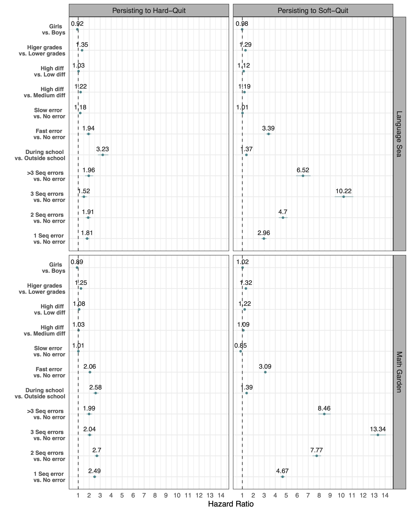
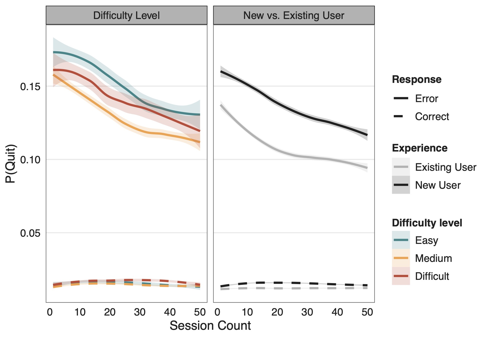
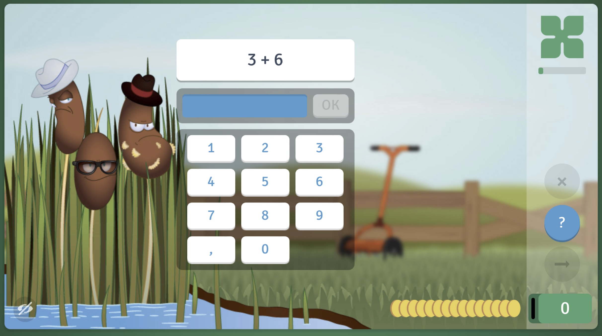
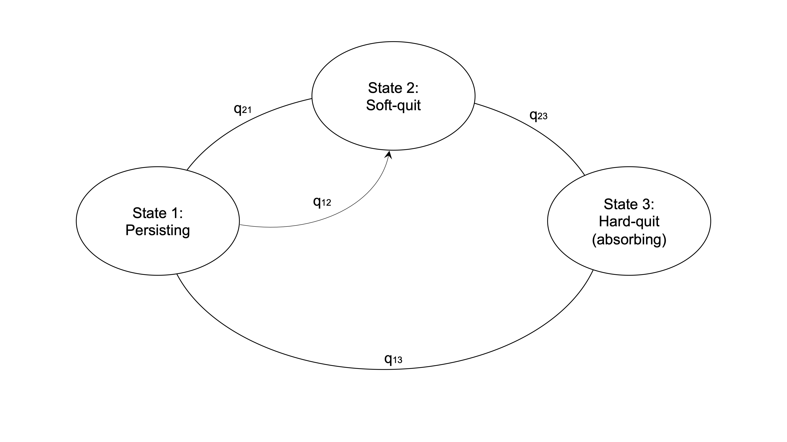

Figures






The biggest threat to learning is not learning. Crucially, sequential errors have been found to be an important cause of quitting from learning. However, little is known about how students are differently affected by sequential errors. Here, we investigate the underlying factors. Using intensive longitudinal practicing data from over $200000$ primary-school students in a large-scale Online Learning Environment (OLE), we confirm previous findings that sequential errors strongly increase the probability of quitting from learning. Second, we find large variability in this effect, ranging from no or small tendencies to quit to high sensitivities to quitting following sequential errors. We validate these results in an independent dataset, and show that individual differences are stable across two across two arithmetic practice domains. Our results corroborate the theoretical notion that students differ in their tolerance to failure and pinpoint a need to individualize how computer-adaptive systems intervene after errors. .